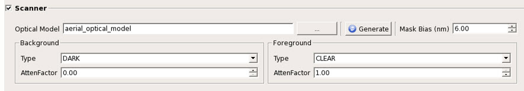

You can add scanner
model parameters to the Mask Pattern Classification tool if simulation
of high resolution defects is required. Scanner model parameters
apply only to high resolution inspections.
Procedure
- In the Parameters tab
of Calibre DefectClassify, click the Scanner radio
button.
- Set the
scanner parameters.
Figure 1. Scanner
Parameters
Optical
Model — Specify the path where the generated optical
model of the scanner is kept. Click Generate to
create a new model (full details are in described in “Generating Optical Models for Mask Pattern Classification”).
Mask
Bias — Specify the mask bias (in nm) to be applied to
mask polygons prior to forward simulation. The default value is
0. If the mask is inspected after chrome removal, the recommended
value is 0.
Background —
Specify the background transmission of the mask.
Type —
Specify the type of mask background area. It can be Dark, Atten,
or Clear. For a Binary masks, the Type is Dark and the AttenFactor
is ignored. For other masks, the Type is either Dark or Atten based
on the background material of the mask, such as Chrome or MoSi.
AttenFactor
— Specify the attenuation factor of the background region. It ranges from
0.00 to 1.00. For example, for a 6% attenuation, the value 0.06
should be specified.
Foreground —
Specify the foreground value. This must be set to CLEAR and AttenFactor
= 1.